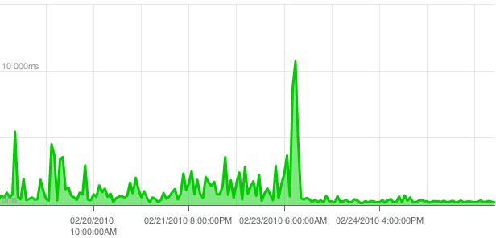

Lightweight Wordpress on Slicehost
I recently switched from shared hosting to a VPS, expecting to get an immediate and automatic performance boost. I was overly optimistic and ran into memory trouble right away. After endlessly struggling with Apache and mod_php configuration, I was ready to give up. Then on a whim, I switched to nginx/fastcgi to see the average response time drop from 1500ms to 300ms:

WebFaction is a great shared hosting environment, providing tons of functionality and impeccable customer support. However, shared hosting means that multiple users share resources on a single physical machine, resulting in wildly fluctuating site performance and uptime at the whim of other clients. Also, I prefer to do system administration from the command line, but WebFaction provides a powerful but clunky web-based administrative interface. All in all, despite my respect for WebFaction, I said goodbye and switched to Slicehost.
I ordered my shiny new slice and plunged into configuration. I migrated wordpress databases and set up Apache with modphp. Everything seemed to work reasonably well until Apache ran for a few hours and began consuming my memory allowance. The slice started thrashing and performance fell to a crawl. I found the culprit to be in my mpmprefork_module MaxClients and MaxRequestsPerChild configuration, but even after tweaking those, my slice was hitting the wall pretty quickly. I nearly returned to cushy WebFaction, where I had marginal performance without the headache, but decided to experiment more.
Nginx is a minimalist HTTP server written by Igor Sysoev for Rambler. It's now being used by Wordpress and other high profile sites. Seeking help from the internet, I eventually came across Thomasz Sterna's php-fastcgi init script and adapted it for my slice, using
PHP_FCGI_CHILDREN=5
PHP_FCGI_MAX_REQUESTS=100
for the low-memory environment. In addition, I installed the WP Super Cache plugin.
For my django site, I wrote an init script for launching the django fcgi server via django's manage.py. Here's the important part:
MAXCHILDREN=5
MAXSPARE=5
MINSPARE=2
# ...
start-stop-daemon --quiet --start \
--pidfile $PIDFILE --chuid "$USER" \
--exec /usr/bin/env -- python $SITEPATH/$SITENAME/manage.py runfcgi \
--settings=settings \
host=$HOST port=$PORT pidfile=$PIDFILE \
maxchildren=$MAXCHILDREN maxspare=$MAXSPARE minspare=$MINSPARE
I'm happy with the performance both for django and php-powered sites.
However, I'm just guessing when it comes to values of MAXCHILDREN,
MAXSPARE and MINSPARE, PHP_FCGI_CHILDREN and
PHP_FCGI_MAX_REQUESTS.
Do you have insight on how to tweak these parameters? Is your VPS hosting configuration better?